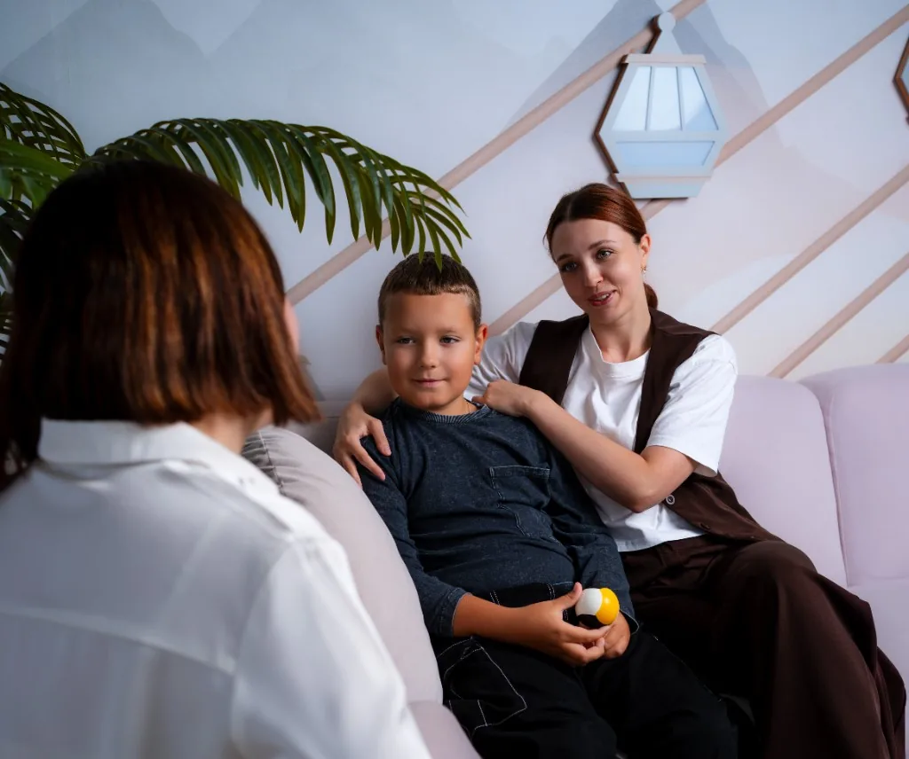

1. Подготовка к экзаменам
- работа с прокрастинацией;
- тревожные мысли;
- реалистичное планирование;
- организация подготовки.
Программы
Программы дополняют индивидуальную работу и дают структуру, навыки и поддерживающую среду. Ближайший набор, формат и стоимость уточняются при обращении.
Программа направлена на снижение экзаменационной тревожности и развитие устойчивых навыков саморегуляции.
Поддерживаем семьи на этапах беременности, подготовки к родительству и адаптации после рождения ребёнка.
Программа не обещает предотвращение медицинских осложнений и не заменяет наблюдение врачей.
Поддерживающая программа для родителей, которые хотят лучше понимать поведение ребёнка, справляться с собственной тревогой и выстраивать устойчивую коммуникацию в семье.
